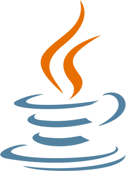

About the author
Qualifications
- MSc in Software Design with Cloud Computing (2027)
- BSc in Computer Systems
Languages
 C++
C++ C#
C#
Java JavaScript
JavaScript Python
Python TypeScript
TypeScript
Introduction
Reasons for a TNA
- Organisation: goals, quality and legal duties
- Individual: the role, confidence and career
- A good TNA joins the two13
One question
What is the gap, and who has it?
Organisational reasons
- Performance: projects finished on time and to standard13
- Compliance: GDPR when students collect user data, and the AI policy4
- AI agents: they can help with a task but make parallel work harder to manage3
Case: students research different subjects, but observations suggest shared project-management difficulties: lost work, oversized scope and late writing.
Individual reasons
Benefits and limitations
| Organisation13 | Individual | Limitations10 |
|---|---|---|
| Targets real gaps | New skills | Staff time |
| Better use of resources | Confidence | Self-ratings can be wrong |
| Better results | Career | Resistance to change |
| Shows compliance | Job satisfaction | Goes out of date |
 The latest course
Management
The real gap
The latest course
Management
The real gap
2 – Without a TNA, the budget follows the shiny course
Methods compared
| Method11 | Best when | Weakness |
|---|---|---|
| Questionnaire and skills audit | Many people, fast, cheap | Must be tested, shallow |
| Interview | You need root causes | Slow, needs a skilled interviewer |
| Observation and documents | Little is known, or to check | People change when watched |
Ask one supervisor
Survey the students
Add supervisor interviews
Add the rubric, compare
3 – Each method covers another's weakness
Stages in the TNA process
| Stage11 | Why it matters |
|---|---|
| 1. Identify the purpose | Otherwise you collect the wrong data |
| 2. Analyse organisation, task, individual | Training may not be the answer |
| 3. Choose and test the methods | Untested questions give poor data |
| 4. Collect the data | Evidence, not opinion |
| 5. Analyse and prioritise | Time and money are limited |
| 6. Recommend and plan | Findings become action |
| 7. Evaluate8 | Did it close the gap? |
Conclusion
Questions?
🙋
Download the slides as a PDF. References are below this slide.
References
- Allen, D. (n.d.) What is GTD? Getting Things Done. Available at: https://gettingthingsdone.com/what-is-gtd/ (Accessed: 17 November 2026).
- Chacon, S. and Straub, B. (2014) Pro Git. 2nd edn. Apress.
- Chou, Y.-H., Kim, J.H., Kartik, V., Jackson, V., Schimmer, T., Zimmermann, T. and Jones, J.A. (2026) ‘Developers as managers of AI agents: a workplace shadowing study’. arXiv preprint arXiv:2610.33588.
- European Union (2016) Regulation (EU) 2016/679 (General Data Protection Regulation). Official Journal of the European Union, L 119, pp. 1-88.
- GitHub (n.d.a) About pull requests. Available at: https://docs.github.com/en/pull-requests/reference/pull-requests (Accessed: 17 November 2026).
- GitHub (n.d.b) Git and GitHub learning resources. Available at: https://docs.github.com/en/get-started/start-your-journey/git-and-github-learning-resources (Accessed: 17 November 2026).
- Kanban University (2020) The Kanban Method. Available at: https://resources.kanban.university/wp-content/uploads/2021/06/The-Official-Kanban-Guide_US.pdf (Accessed: 17 November 2026).
- Kirkpatrick, D.L. and Kirkpatrick, J.D. (2006) Evaluating training programs: the four levels. 3rd edn. San Francisco: Berrett-Koehler.
- Knowles, M.S., Holton, E.F., Swanson, R.A. and Robinson, P.A. (2020) The adult learner. 9th edn. Abingdon: Routledge.
- LCETB (n.d.a) Training need analysis [PowerPoint, 6N3325]. Limerick and Clare ETB.
- LCETB (n.d.b) Conducting a TNA [PowerPoint, 6N3325]. Limerick and Clare ETB.
- MERIC (2026) Information Technology Skills. March 2026. Missouri Department of Higher Education and Workforce Development. Online job-ad data from Lightcast, 1 January–31 December 2025.
- Noe, R.A. (2023) Employee training and development. 9th edn. New York: McGraw Hill.
Media used
- Drakeposting. Stills from Hotline Bling, Drake (2015). Template from imgflip.
- Distracted boyfriend. Stock photo by Antonio Guillem (2015). Template from imgflip.
- Galaxy brain (expanding brain). Anonymous (2017). Template from imgflip.
- This is fine. KC Green, Gunshow, "On Fire" (2013). Template from imgflip.
Generative AI: ChatGPT assisted with drafting and revising presentation text and speaker notes, and with source discovery. The presenter is responsible for checking the final content and references.